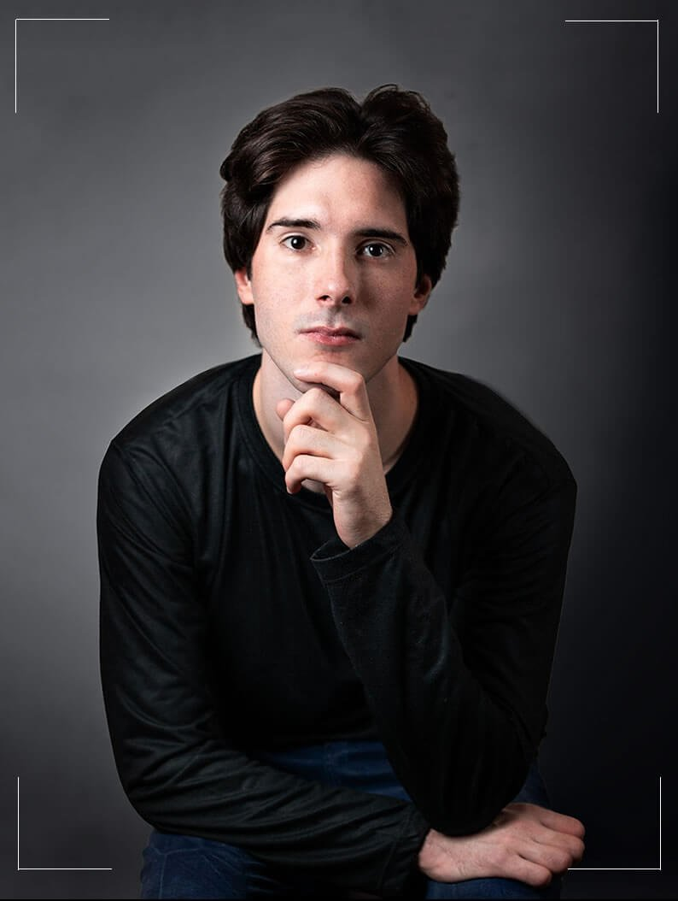
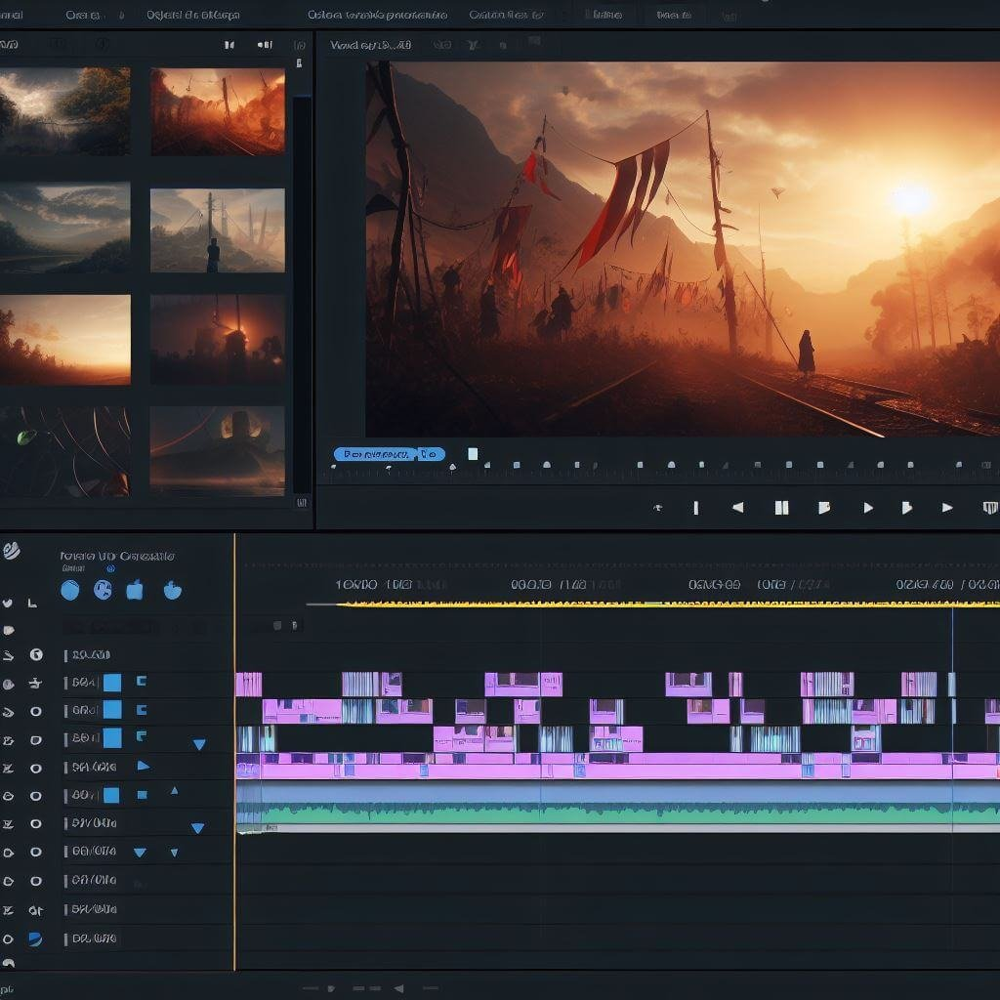
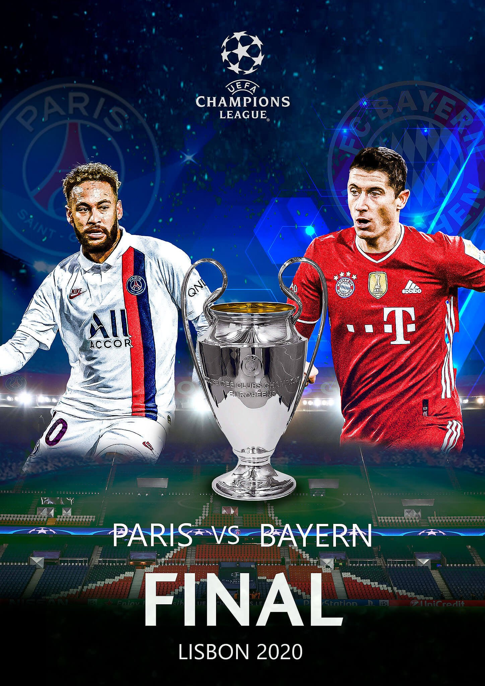
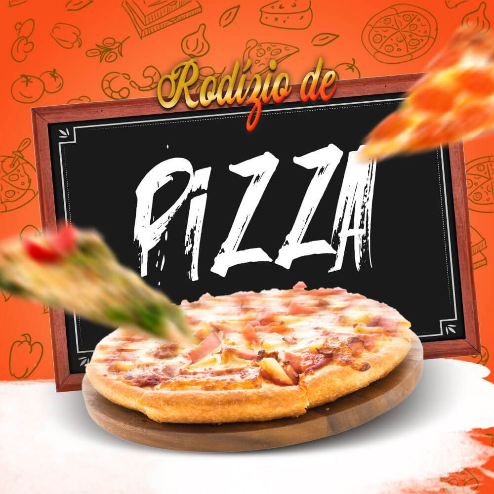
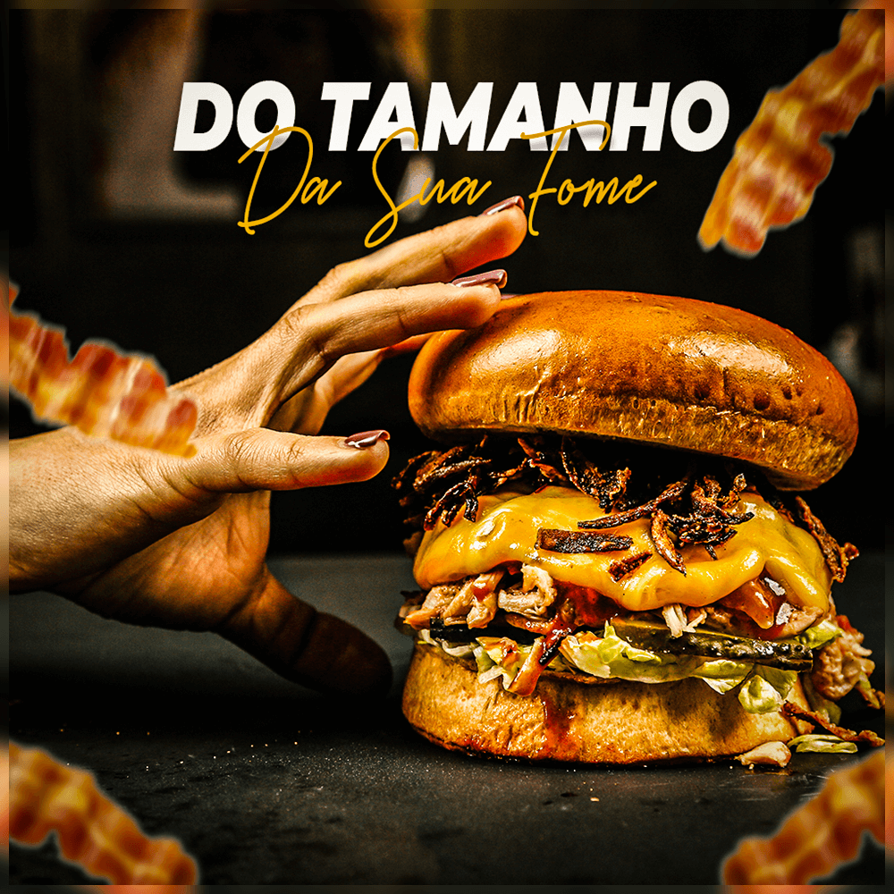
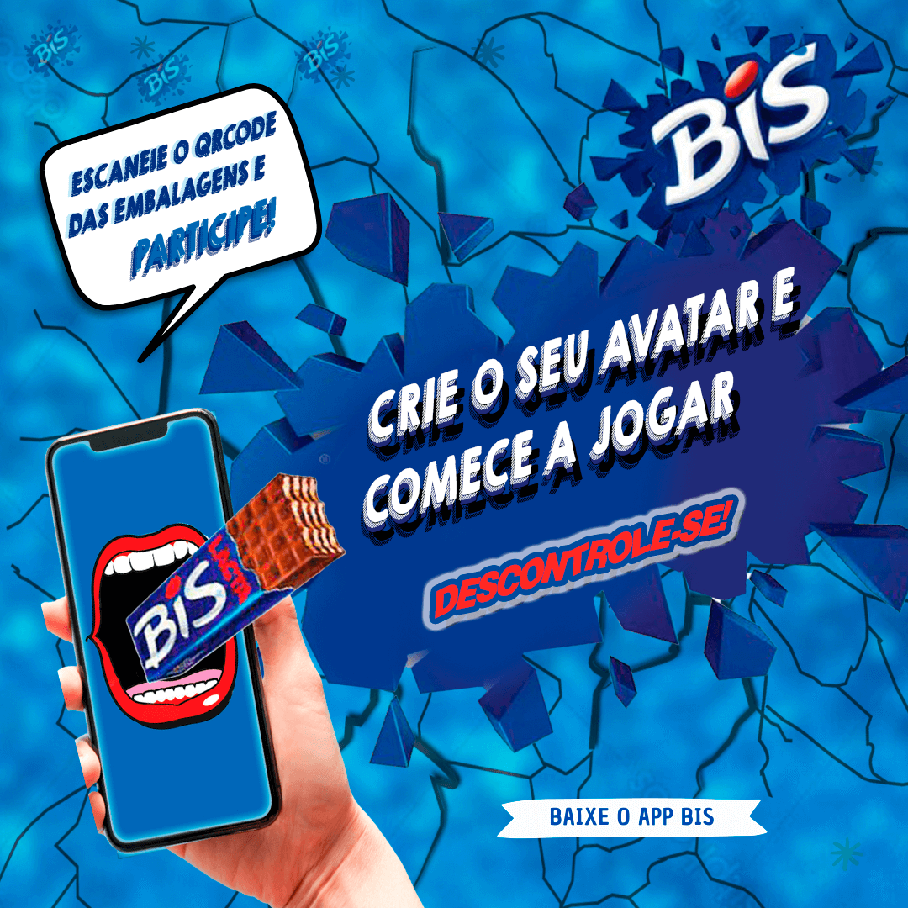
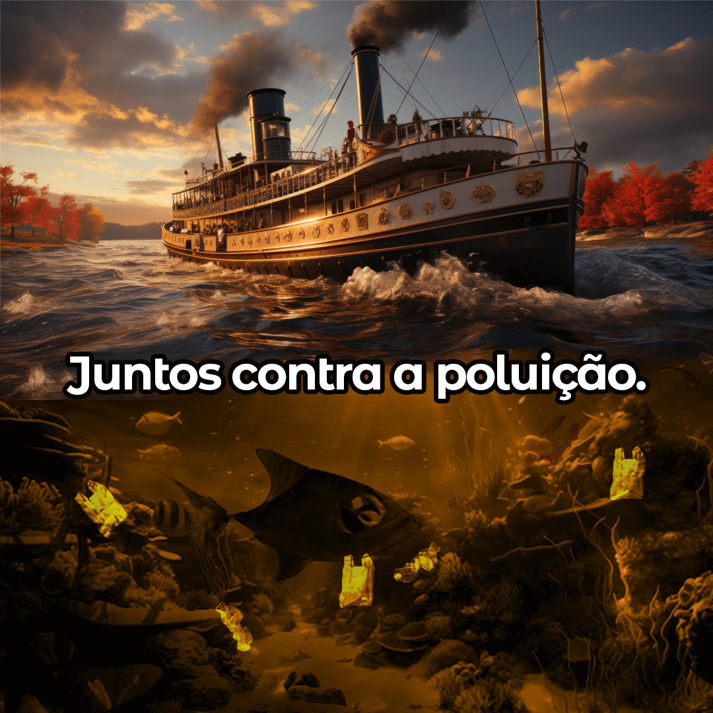
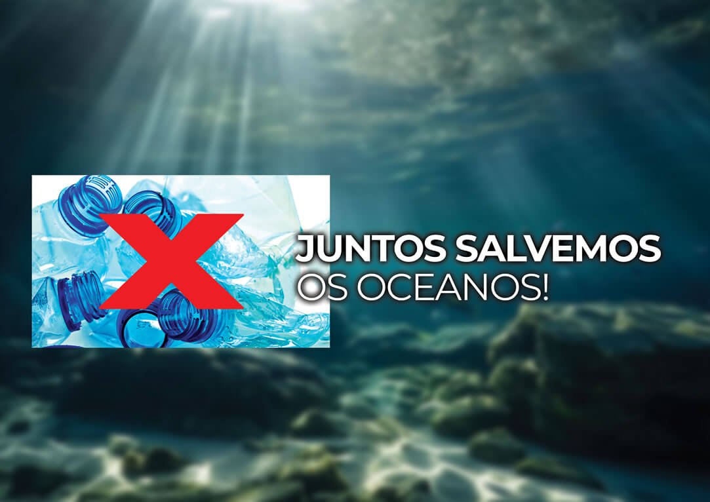
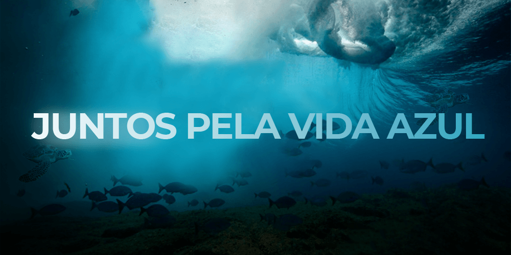
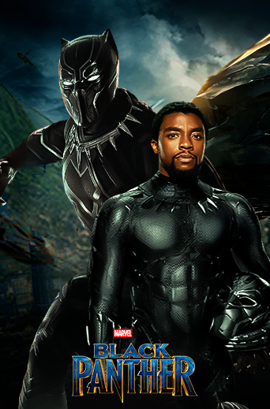

Qualidade profissional
Imagem, som e efeitos visuais tratados com cuidado para o resultado ter presença.
Vídeo, publicidade e design gráfico para marcas que querem comunicar com clareza, personalidade e impacto.
Da primeira ideia ao corte final, cada escolha tem uma função.
Sou Luigi Guerrazzi, editor de vídeo, publicitário e designer gráfico. Transformo imagens, sons e ideias em peças que prendem atenção e fortalecem marcas.
Conhecer minha trajetória ↗
Mais do que montar cenas: organizar intenção, ritmo e linguagem para o vídeo chegar onde precisa.
Imagem, som e efeitos visuais tratados com cuidado para o resultado ter presença.
Você ganha foco enquanto a seleção, montagem e finalização ficam em boas mãos.
As melhores imagens encontram uma narrativa visual capaz de envolver quem assiste.
Uma linguagem reconhecível para seus vídeos, campanhas e projetos de marca.
Orientação próxima para transformar o briefing em uma peça pronta para circular.
O trabalho acompanha a evolução do projeto, com espaço para ajustes e novos cortes.
Transformando ideias em imagens que falam por si mesmas. O poder da criatividade em cada traço, cor e composição.






Showreels, eventos, institucionais e narrativas para diferentes ritmos, públicos e objetivos.
Uma seleção do trabalho recente de Luigi Guerrazzi em edição de vídeo e direção de linguagem.
Energia, presença e memória em um filme de evento com ritmo de campanha.
O que acontece antes, durante e depois também faz parte da história.

Um projeto disponível no acervo público de vídeos do cliente.

Mais um recorte da videografia disponível no portfólio original.

Projeto adicional incorporado por embed para preservar a leveza do site.
Conteúdo adicional da seleção pública de vídeos do cliente.
Um bom projeto começa com contexto. Aqui estão algumas respostas rápidas para abrir a conversa.
Showreels, vídeos publicitários, eventos, institucionais, conteúdos para redes sociais e projetos autorais com diferentes formatos e ritmos.
Sim. O trabalho inclui direção visual, composição, peças publicitárias e soluções gráficas para manter a comunicação coerente em diferentes pontos de contato.
O processo começa pelo briefing e pela organização do material. Depois vêm seleção, montagem, ritmo, tratamento, trilha, ajustes e entrega final.
Sim. As revisões fazem parte de um processo colaborativo para aproximar o resultado da intenção da marca ou do projeto.
Envie uma mensagem com o objetivo do projeto, prazo, formato e materiais disponíveis. A partir disso, Luigi orienta o melhor caminho.
Para que possamos criar projetos criativos juntos.